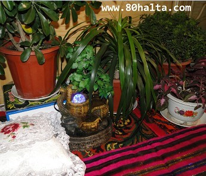
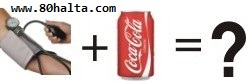

ئەسسالامۇ ئەلەيكۇم مۆھتىرەم تورداش، بلوگىمىزغا خۇش كەپسىز، قۇتلۇق قەدەملىرىڭىزگە مەرھابا!
 چەتئەللەردە ياشايدىغانلار كىرىڭلار!!!
چەتئەللەردە ياشايدىغانلار كىرىڭلار!!!
ئاپتورى:Birzat ۋاقتى:2012-02-24
‹‹ پار كېسىلى ›› گە قانداق تاقابىل تۇرۇش كېرەك؟
ئاپتورى:Birzat ۋاقتى:2011-11-18

پار بىلەن تەمىنلەش مەزگىلىدە، نۇرغۇن شەھەر ئاھالىلىرى ئۆيىنىڭ ئىسسىمىغانلىقى سەۋەبىدىن ھەممە تەرەپكە قاتىراپ يۈردى. ئەمما يەنە بىر قىسىم كىشىلەر ئۆيى زىيادە ئىسسىپ كەتكەنلىكى سەۋەبىدىن ‹‹ پار كېسىلى ››گە گىرىپتار بولدى.
يېقىندا، مۇخبىر ئاپتونوم رايونلۇق جۇڭگو تېبابىتى دوختۇرخانىسى ئامبۇلاتۇرىيىسىگە بېرىپ، كېسەل كۆرۈنگىلى كەلگەنلەرنىڭ مۇتلەق كۆپ ساندىكىسى گىلى ئىشىپ قېلىش، نەپسى سىقىلىش، ئىچى تىتىلداش، ماغدۇرسىزلىنىش قاتارلىق كېسەللىكلەر سەۋەبىدىن كەلگەنلىكىنى بايقىدى.
كولاخۇمارلار- يۇقۇرى قان بېسىم كېسلىگە گىرىپتار بولۇپ قېلىشتىن ئاگاھ ب
ئاپتورى:Birzat ۋاقتى:2011-11-04

ھالبۇكى كۈندە 4 قۇتىدىن كۆپرەك كولا ئىچىدىغانلارنىڭ يۇقۇرى قان بېسىم كېسىلىگە گىرىپتار بولۇش نىسبىتى كولانى ئاز ئىچىدىغان ياكى ئىچمەيدىغانلاردىن 28%~44%گىچە يۇقۇرى بولغان. مۇتەخەسىسلەرنىڭ ئېيتىشىچە مەيلى كولانىڭ قەنت تەركىبى قانچە تۆۋەن بولسىمۇ ئوخشاشلا يۇقۇرى قان بېسىمغا گىرىپتار قىلىش خەتىرى يەنىلا ئېشىپ بارىدىكەن، پەقەت ...
يۇقۇرى قان بېسىم ۋە مېڭىگە قۇۋۋەت يېتىشمەسلىككە مەنپەئەتلىك يىمەكلىكلە
ئاپتورى:Birzat ۋاقتى:2011-01-18
مېڭىنى قۇۋۋەتلەشكە :
يۇقۇرى قان بېسىمنى ئاساس قىلىپ تۇرۇپ كۆرسەتمە بىرەي:
1.لاچىندانە، گاۋزىبان، ئۇستىقۇددۇس، قىزىلگۈل، سۇمبۇل، پىننە، ياڭاق پاسىلى، بەدىيان، زەپە قاتارلىقلاردىن مۇۋاپىق مىقداردا ئىلىپ چايلىق تەڭشەپ چاي دەملەپ ئىچىپ بەرسە يۈرەك-مېڭىنىڭ قۇۋۋىتىنى ئاشۇرىدۇ، ئەقلىي قابىلىيەتنى ئاشۇرىدۇ. ئۇيقۇ سۈپىتىنى ياخشىلايدۇ. بۇ چايلىقنى زىيادە چارچايدىغان، ئەقلىي ئەمگەك بىلەن كۆپ شۇغۇللىنىدىغانلار ئىچىپ بەرسە ئۈنۈمى ياخشى.
2.ئانار سۈيى، ئەنجۈر، بادام مېغىزى، ياڭاق مېغىزى، پىستە مېغىزى، ئۈرۈك مېغىزى ۋە
خەتكۈش: يۇقۇرى قان بېسىم ۋە مېڭىگە قۇۋۋەت يېتىشمەسلىككە مەنپەئەتلىك يىمەكلىكلەر
ساباھەت يۈرۈشلۈك ساغلاملىق مەھسۇلاتلىرى
ئاپتورى:Birzat ۋاقتى:2010-11-06
خەتكۈش: قىزىلگۈلقەنت
راك كېسىلىنىڭ يۆتكىلىشى ھەققىدىكى يېڭى بايقاش
ئاپتورى:Birzat ۋاقتى:2010-10-21
 ئامېرىكا ئالىملىرىنىڭ چاشقان ئۈستىدە ئىشلىگەن تەتقىقاتىدىن بايقىلىشىچە، راك كېسىلى يۆتكىلىشنىڭ كېسەل جەريانىدىكى باشلىنىش ۋاقتى ئىلگىرى كىشىلەر ئويلىغىنىدىن كۆپ بالدۇر بولۇشى مۇمكىن ئىكەن. راك كېسىلى پەيدا بولغاندىن كېيىن،...
ئامېرىكا ئالىملىرىنىڭ چاشقان ئۈستىدە ئىشلىگەن تەتقىقاتىدىن بايقىلىشىچە، راك كېسىلى يۆتكىلىشنىڭ كېسەل جەريانىدىكى باشلىنىش ۋاقتى ئىلگىرى كىشىلەر ئويلىغىنىدىن كۆپ بالدۇر بولۇشى مۇمكىن ئىكەن. راك كېسىلى پەيدا بولغاندىن كېيىن،...
خەتكۈش: راك
ئەرلەر ساغلاملىقىنىڭ ئون چوڭ ئۆلچىمى Men's Health Formula
ئاپتورى:Birzat ۋاقتى:2010-09-02

دۇنيا سەھىيە تەشكىلاتى ئوتتۇرغا قويغان ساغلاملىقنىڭ يېڭى ئۇقۇمى بولسا: ساغلاملىق دېگىنىمىز-كېسەلگە گىرىپتار بولمىسلا ساغلام بولۇپ قالماستىن،بەلكى پسخىك ساغلاملىق ۋە ئىجتىمائىي جەھەتلەردىكى ساغلاملىقنى ئۆز ئىچىگە ئالىدۇ. دېمەك،ساغلاملىق روھىي،جىسمانىي ۋە ئىجتىمائىي مۇناسىۋەت جەھەتلەردە ساغلام بۇلۇشقا كاپالەتلىك قىلىشنى كۆرسىتىدۇ.دۇنيا سەھىيە تەشكىلاتى يەنە ئەرلەرنىڭ ساغلام ياكى ساغلام ئەمەسلىكىنى ئۆلچەيدىغان تۆۋەندىكى ئون ئۆلچەمنى بەلگىلىدى:
خەتكۈش: ئەرلەر ساغلاملىقىنىڭ ئون چوڭ ئۆلچىمى Men's Health Formula
يېمەكلىكلەرنى پۇراش، كۆرۈشمۇ ئادەمنى سېمىرتىدۇ Insulin and Fat Body
ئاپتورى:Birzat ۋاقتى:2010-08-25
سېمىز كىشىلەرنىڭ قىنىدىكى ئىنسۇلىن مىقدارى ئاداتتىكى كىشىلەرگە قارىغاندا يۇقۇرى بولغانلىقتىن ، ئىنسۇلىننىڭ قەنتنى ياغقا ئايلاندۇرۇش رولىمۇ سېمىز كىشىلەردە تېخىمۇ رۇشەن بولىدۇ. شۇڭا، ئېنسۇلىننىڭ ئىشىپ كېتىشىپ نەتىجىسىدە ماددا ئالماشتۇرۇش سىستېمىلىرى تېخىمۇ كۆپ مايلارنى ئىشلەپ چىقىرىپ ۋە ساقلاپ ئادەمنىڭ سەمىرىپ كېتىشىگە سەۋەب بولىدۇ.....
بىخەتەر ئورۇقلاشنىڭ ئاددىي ئۇسۇللىرى How To Lose Weight Safely?
ئاپتورى:Birzat ۋاقتى:2010-08-24
سېمىزلەرنىڭ مېڭە سىغىمچانلىقى كىچىك بولىدۇ Brain and Fat Body
ئاپتورى:Birzat ۋاقتى:2010-08-24
ساغلاملىق سۈپەت كۆرسەتكۈچى يۇقىرىراق بولغانلارنىڭ چوڭ مېڭە ھەجىمى ، بولۇپمۇ پېشانىسى ۋە چېكىسى كىچىكرەك بولىدۇ . بۇ ئىككى بۆلەك چوڭ مېڭىنىڭ پىلانلاش ۋە ئەستە تۇتۇش ئىقتىدارىغا نىسبەتەن ئىنتايىن مۇھىم رول ئوينايدۇ ، چوڭ مېڭىسىنىڭ ھەجىمى بەك كىچىك بولغانلار دىۋەڭلىك كېسىلىگە گىرىپتار بولۇپ قېلىشى مۇمكىن ئىكەن .
خەتكۈش: سېمىز
سېمىزلىك ۋە مەزى بېزى راكى Fat and Prostate Cancer
ئاپتورى:Birzat ۋاقتى:2010-08-24

خورەك تارتىشمۇ بىر خىل كېسەللىك How to Stop Snoring
ئاپتورى:Birzat ۋاقتى:2010-08-20
 ئادەتتىكى كىچىك كېسەللىكلەرگە پەرۋا قىلماسلىقتەك ئادەت كۈچى كىشىلەرنىڭ ھاياتقا خەۋپى چوڭ بولغان مۇرەككەپ ۋە ئاستا خاراكتېرلىك كېسەللىكلەرگە كۆڭۈل بۆلۈش دەرىجىسىنى ئاشۇردى، لېكىن بىز ئانچە ئېتىبارغا ئېلىپ كەتمەيدىغان بىرمۇنچە يەڭگىل كېسەللىكلەر تەرەققىي قىلىپ، ھاياتقا تەھدىت ئېلىپ كېلىدىغان دەرىجىگە بېرىپ يېتىۋاتىدۇ. خورەك تارتىش ( 鼾症 ، Snoring ) دەل شۇلارنىڭ بىرى. خورەك تەرەققىي قىلىپ ئېغىر دەرىجىگە بارغاندا نەپەسنىڭ ۋاقتىنچە توختاپ قېلىشنى كەلتۈرۈپ چىقىرىدۇ، بۇنىڭ ھاياتقا كەلتۈرىدىغان خەۋپى ئالاھىدە چوڭ بولىدۇ.
ئادەتتىكى كىچىك كېسەللىكلەرگە پەرۋا قىلماسلىقتەك ئادەت كۈچى كىشىلەرنىڭ ھاياتقا خەۋپى چوڭ بولغان مۇرەككەپ ۋە ئاستا خاراكتېرلىك كېسەللىكلەرگە كۆڭۈل بۆلۈش دەرىجىسىنى ئاشۇردى، لېكىن بىز ئانچە ئېتىبارغا ئېلىپ كەتمەيدىغان بىرمۇنچە يەڭگىل كېسەللىكلەر تەرەققىي قىلىپ، ھاياتقا تەھدىت ئېلىپ كېلىدىغان دەرىجىگە بېرىپ يېتىۋاتىدۇ. خورەك تارتىش ( 鼾症 ، Snoring ) دەل شۇلارنىڭ بىرى. خورەك تەرەققىي قىلىپ ئېغىر دەرىجىگە بارغاندا نەپەسنىڭ ۋاقتىنچە توختاپ قېلىشنى كەلتۈرۈپ چىقىرىدۇ، بۇنىڭ ھاياتقا كەلتۈرىدىغان خەۋپى ئالاھىدە چوڭ بولىدۇ.
تورغا چىققانلار دىققەت قىلىشقا تىگىشلىك روھىي ساغلاملىق
ئاپتورى:Birzat ۋاقتى:2010-07-18
ئوڭۇشسىزلىققا ئۇچراش، خىزمەت كۆڭۈلدىكىدەك بولماسلىق، مۇھەببىتى بۇزۇلۇش قاتارلىق ئالدىنقى سەۋەب بولغانلىقتىن ، تورغا چىققۇچى بۇلاردىن قۇتۇلۇشنى ئىزدەپ ، تورغا بىرىلپ كىتىپ، ئەمەلىي تۇرمۇشنىڭ مەۋجۇتلۇقىنى ئۇنتۇپ ، تورنىڭ مەۋھۇم بوشلۇقىدا ياشايدۇ.
ئومۇرتقا تۈۋرۈكى ئوپىراتىسىيەسىدە چوڭ يارا قالدۇرمايدىغان ماشىنا ئادەم
ئاپتورى:Birzat ۋاقتى:2010-07-15

كۆكنۇر يۇقۇرى پەن-تېخنىكا شىركىتى ئىشلىگەن مەھسۇلاتلار تونۇشتۇرلىشى
ئاپتورى:Birzat ۋاقتى:2010-07-14
شىجاڭ كۆكنۇر يۇقىرى پەن – تېخنىكا ئېچىش ھەسسىدارلىق شىركىتى
ئۇستىقۇددۇس شەربىتى – كارى باش ئوت ئامپۇلى
غەيرى تەبىئىي ۋە بەلغەمدىن بولغان ساقسىز باشقا پايدا قىلىدۇ.
نېرۋا ئاجىزلىقنى ياخشىلايدۇ ۋە نېرۋا ئاجىزلىقتىن بولغان ئۇيقۇسىزلىقنى ئوڭشايدۇ.
نېرۋا خاراكتېرلىك يۈرەككە مەنپەئەت قىلىدۇ.
مالىخولىيەنى تېنجىتىدۇ.
مەزى بېزى داۋاسى – مەزى بېزى ئامپۇلى
مەزى بېزى ياللۇغى، مەزى بېزى چوڭىيىشىغا مەنپەئەت قىلىدۇ.
توقۇلما ۋە قان-تومۇرلاردىكى سەۋدا خىلىتىنى ھەيدەيدۇ. جوزامغا داۋا بولىدۇ.
مېڭە ۋە جىگەر قان-تومۇرلىرىنىڭ قېتىشىشىغا مەنپەئەت قىلىدۇ، مېڭە تومۇرىنى ئاچىدۇ.
ئېلىشقاڭغۇلۇق ۋە سوغۇقتىن بولغان باش ئاغرىقىنى مۇئەييەن دەرىجىدە كېسىدۇ.
قوساققا سۇ چۈشۈكە بېرىلىدۇ.
خەتكۈش: كۆكنۇر
تببىي ئۇچۇرلار
ئاپتورى:kukyal ۋاقتى:2010-07-06
بالىلار ئۈچۈن ساخاۋەتلىك ئۇچۇرلار [ساغلاملىق ئۇچۇرلىرى]
ئاپتورى:Birzat ۋاقتى:2010-07-01
 تور بەتلەرنى ئارىلاۋېتىپ ياكى گېزىت ئوقۇۋېتىپ، ئاق قان كېسىلى ( 白血病،Leukem ) بىمارلىرى ئۈچۈن ياردەم تەلەپ قىلىپ يېزىلغان مۇراجىئەتنامىلارنى پات پات ئۇچىرىتىپ قالامسىز؟ ئۇلارغا ياردەم قىلىشنى ئويلىغان ئەمما ئىككىلىنىپ قالغان ۋاقىتلىرىڭىزمۇ بولغانمۇ؟
تور بەتلەرنى ئارىلاۋېتىپ ياكى گېزىت ئوقۇۋېتىپ، ئاق قان كېسىلى ( 白血病،Leukem ) بىمارلىرى ئۈچۈن ياردەم تەلەپ قىلىپ يېزىلغان مۇراجىئەتنامىلارنى پات پات ئۇچىرىتىپ قالامسىز؟ ئۇلارغا ياردەم قىلىشنى ئويلىغان ئەمما ئىككىلىنىپ قالغان ۋاقىتلىرىڭىزمۇ بولغانمۇ؟ ئەتىراپىڭىزدىكى ئائىلىسىدە ئاق قان كېسىلى ( 白血病،Leukem ) بارلارغا خەۋەر قىلىپ قويۇڭ، ھازىر ئاق قان كېسىلىگە گىرىپتار بولغان ئۆسمۈرلەر ئۈچۈن ئىقتىسادى ياردەم قىلىدىغان بىر تۈر شىنجاڭدىمۇ يولغا قويۇلماقتا. ئىلتىماس قىلىش مۇۋاپىقيەتلىك بولسا، ھەر بىر بالا 30000 يۈەندىن 50000 يۈەنگىچە ئىقتىسادى ياردەمگە ئېرىشەلىشى مۇمكىن. بەلكىم، بۇنداق ئائىلىلەرنىڭ تورغا چىقىش ئىمكانىيىتى ۋە بۇ خىل ئۇچۇرلاردىن ۋاقىپلىنىش شارائىتى بولماسلىقى مۇمكىن. سىز شۇلارنى خەۋەردا قىلىڭ ھەم ياردەم قىلىپ ئىلتىماس قىلىشىپ بېرىڭ! مانا بۇمۇ پۇل بەرگەنگە ئوخشاشلا ياردەم قىلغىنىڭىز.
ئائىلىڭىزدە ياكى ئەتراپىڭىزدا توشقان كالپۇك (兔唇 ،Cleft lip ) ( كالپۇكى ياكى تاڭلىيى يېرىق) بالىلار بارمۇ؟ بۇ خەۋەرنى ئۇلارنىڭ ئاتا-ئانىسىغا يەتكۈزۈپ قويۇڭ. مۇشۇنداق كېسەلگە گىرىپتار بولغان ئۆسمۈرلەر ئەگەر ئاتا-ئانىسىنىڭ ئوپراتسىيە قىلدۇرۇشقا قۇربى يەتمىسە، قىزىل كرېست جەمئىيىتى بىلەن ئالاقىلاشسا، يەنرەن پەرىشتە فوندى ( 嫣然天使基金 ) نىڭ ياردىمى ئارقىلىق ھەقسىىز ئوپراتسىيە قىلىنىدۇ، يەنە ئاتا-ئانىسىنىڭ مۇناسىۋەتلىك چىقىملىرىمۇ مۇۋاپىق كۆتۈرۈلىدۇ.
بۇ فوندنىڭ قۇرغۇچىسى، داڭلىق كىنو ئارتىسى لى ياپېڭ ( 李亚鹏 ) ئەپەندى شىنجاڭدىكى بارلىق توشقان كالپۇك بالىلارنى داۋالاپ ساقايتىشقا بەل باغلىدى. خوش، ئۇنداقتا شۇنچە بەلەن بۇ گەپلەرنىڭ تەپسىلاتى قەيەردىن - قەيەرگىچە ؟